The main propose of application metrics to answer on simple question: "what's going on there?" Why our app works slowly? Or may be it works fast enough? Will we face some issues in near future? Or may be we're expecting them right now? All these questions are important if you're going to provide high quality service and yes, wise metrics analysis gives you ability even to predict (a little) the future!
First of all, we'll take a look on CouchDB /_stats resource which contains a lot of various CouchDB metrics: httpd request and responses, opened databases and auth cache, continuous changes feeds listeners and view reads, and more. These metrics are have good self-descriptions, but let's stop on the most important ones.
Every request to CouchDB starts with HTTP method which defines operation semantic and results behavior. CouchDB operates with the next methods:
HEADGETPOSTPUTDELETECOPYand tracks stats by them as well. How this information could help us?
As was said, request method defines operation semantic. HEAD
requests are used to check existence of the databases, documents
or attachments, GET are for fetching the data; a lot of PUT
requests signs about large set of update operations. On other hand
if you see a lot of DELETE requests this is the open room for
optimizations: mass deletes are better and effective to made via
bulk update requests.
Putting all these metrics together into single graph easily provides the answer about how your CouchDB instance is used by your clients.
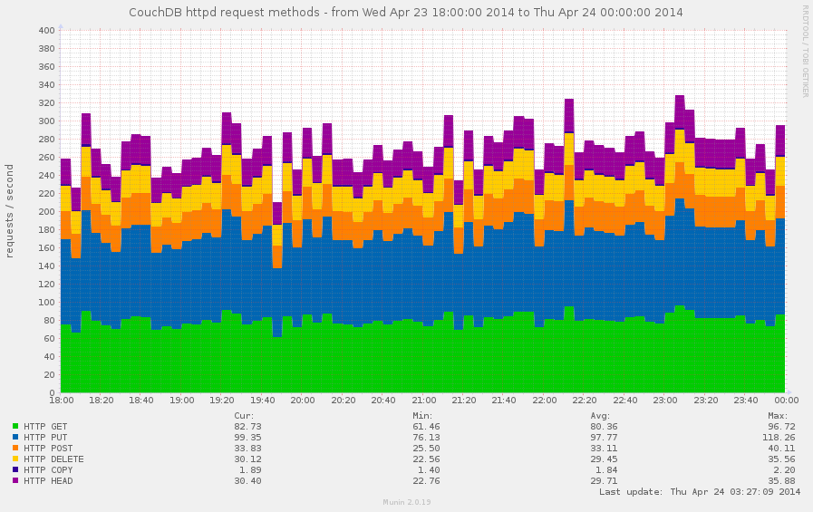
Every request is served for some amount of time. As faster it has processed, as faster client receives the response and as more your users are happy (as you too). Larger request times leading to "slow" service and request timeouts, which are bad.
CouchDB provides request_time metric which represents
length of a request inside CouchDB without MochiWeb - not a full,
but still a picture which helps to estimate quality of service
of your CouchDB instance.
Suddenly, CouchDB doesn't provides per each request statistic about
spent time on it, but it provides others useful values: stddev
and mean against spent time. So we could know about average time
of our requests and a low standard deviation for them too.
The difference between them is in details: stddev value represents
times within +/- 1σ range (34,1% from both sides on mean), so it's
immune to rare, but very fast or very slow requests.
Looking on the next stats:
"request_time": {
"description": "length of a request inside CouchDB without MochiWeb",
"current": 409002.771,
"sum": 409002.771,
"mean": 51.687,
"stddev": 287.39,
"min": 0.6666666666666667,
"max": 5014.25
}
we could say, that to serve the most slow request 5 seconds was spent, but for average request it took ~300ms to be processed by CouchDB.
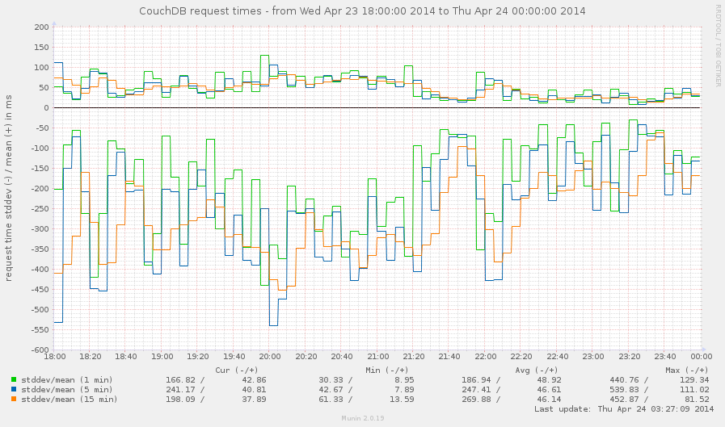
Since stddev and mean values are formed from all request that
were served, this makes them not much accurate in long term service.
To make them better, let's take a look on samples configuration
option. You're probably wondered why it exists and on what it affects.
Well, it's allows to get the statistics for specified time frame
(in seconds). The default value is [0, 60, 300, 900] that means
that we could receive metrics values for all the time (0), for
the last minute, 5 minutes, 15 minutes. In other words, we could use
that to measure stddev and mean within certain time frame without
side effect of all previous requests to get the most accurate values
which reflects the reality.
There are some specific requests that requires some additional
attention. CouchDB provides special httpd metrics group for them:
HTTP requests: overall amount of HTTP requestsbulk requests: how often were used bulk updatesview reads: amount of requests to the view indexestemporary view reads: amount of requests to the temporary view indexes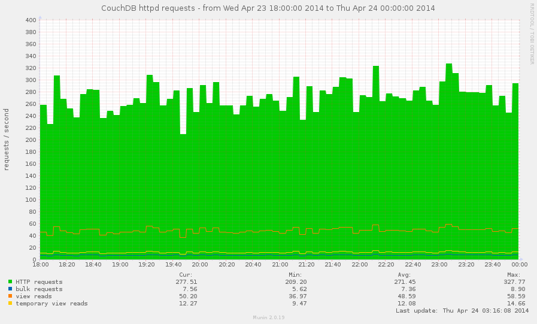
How this information could be useful?
The bulk update operation costs single POST request, but it may
cause a lot of changes and significantly boost databases writes rate
(see Databases I/O section below).
The temporary view reads is almost always signs about executing
temporary view. That's really not good operation, especially for
huge databases for millions of documents. You'll be happy to keep
this metric around 0.
The view reads is good metric to determine how often your views
are been used. Also, if a lot of view read requests comes when
view index isn't build, the resulting request time for them could be
huge.
Another special kind of requests is subscribing to the continuous changes feeds. Why it's so special that we're discussing it separately? Because unlike others requests, it goes not in form request-response, but request-response-response-response-...-response. During this communication session the client receives all database changes instantly.
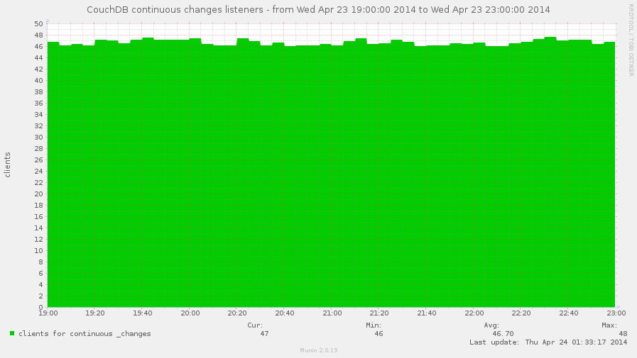
This metric also could be used to approximately determine amount of pull replications which served on others instances and uses yours as data source. But the key word is "approximately" since you (and CouchDB too) couldn't be sure in that - these listeners could be just a clients which monitors database changes, nothing more.
Finally, when request had been served, the response returns back to the client. With what every HTTP response starts? Right, with HTTP status code, which defines the response nature: is it completed successfully, or some error happened, or may be request wasn't even correct.
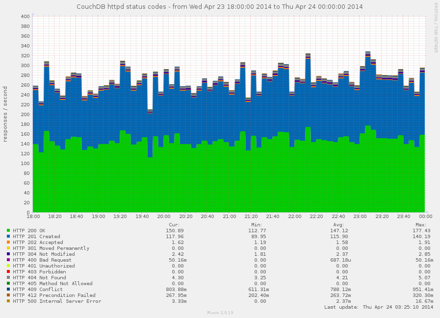
Keeping eye on amount of HTTP 4xx and 5xx responses helps
you provide quality service for you users. Normally, you want to see
no 500 errors at all. Having high amount of 401 errors could say
about authentication problems while 403 tell you that something
or someone actively doing things that he's shouldn't do. Notable
amount of 409 tells about high update concurrency for some
resources.
Do you need to track the others codes? Yes, you do, since you'll never
know what part of successful responses errors takes.
"2 HTTP 500 errors" is about nothing, but this is bad is there are
only 10 successful responses and in the same time they could be
ignored (unless you're perfectionist) if 100000 HTTP 200 OK
were returned back.
CouchDB keeps some amount of user credentials in memory to speedup authentication process by elimination of additional database lookups. This cache size is limited by the configuration option auth_cache_size. On what this affects? In short, when user login CouchDB first looks for user credentials what associated with provided login name in auth cache and if they miss there then it reads credentials from auth database (in other words, from disk).
The auth_cache_miss metric is highly related to HTTP 401 responses
one, so there are three cases that are worth to be looked for:
High cache misses and high 401 responses: something brute forces
your server by iterating over large set of user names that doesn't
exists for your instance
High cache misses and low 401 responses: your auth_cache_size
is too small to handle all your active users. try to increase his
capacity to reduce disk I/O
Low cache misses and high 401 responses: much likely something
tries to brute force passwords for existed accounts on your server
Note that "high" and "low" in metrics world should be read as "anomaly high" and "anomaly low" for your instance.
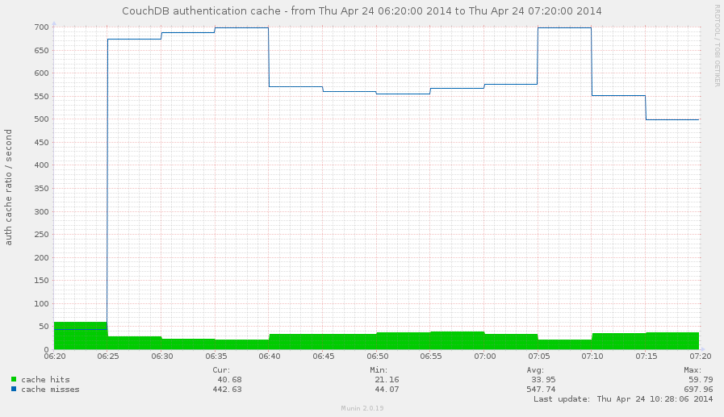
Whoa! Someone really trying to do bad things on the graph above! And that's not
looks like auth_cache_size issue.
Ok, but why do we need auth cache hit there? We need it as an ideal value to compare misses counter with. Just for instance, is 10 cache misses a high value? What about 100 or 1000? Having cache hits rate at some point helps to answer on this question.
The database_reads and database_writes shows overall I/O for your
databases when documents are been read and changed. Combining both
these metrics helps to define nature of your instance: is it readonly,
mostly for reads, have balanced reads and writes, or writes-heavy.
The answer on this question helps to determine your server
optimization: for write-heavy case you need in good and fast disks,
while for read-heavy case SSD disks would be the best solution.
However, SSD always makes things better, but they lives longer when
writes are less.
You can try to get the same answer by using HTTP request methods
metrics, but the result you get wouldn't be clear: single POST
request for bulk update can cause a lot of writes, while same POST
requests against views causes only reads.
CouchDB only keeps opened databases which are receives some activity:
been requested or running the compaction. The maximum amount of opened
databases in the same moment of time is limited by max_dbs_open
configuration option. By default it set to 100 so you're unlikely
hit this error at startup, but it may strike later when your services
grows. When CouchDB hits this limit, any request to "closed" databases
will generate the error response: {error, all_dbs_active}.
However, once opened database doesn't remains open forever: in case of inactivity CouchDB eventually closes them providing more space in the room for others, but sometimes such cleanup may not help due to large activity on your CouchDB instance, especially if it runs a lot of replication processes.
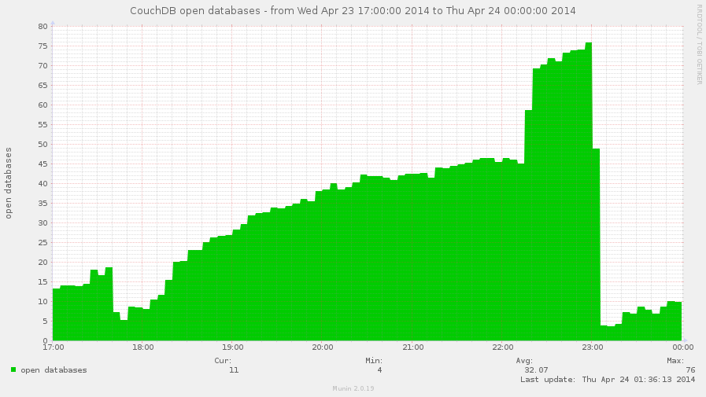
The open_databases metric combined with max_dbs_open configuration
option helps to predict and eliminate possibility of such error and
also configure your CouchDB right by your needs.
The open_files metric shows amount of file descriptors that CouchDB
holds opened. Normally, CouchDB opens two file descriptors per each
database + one per view index + for compaction files + few for other
files like log file etc.
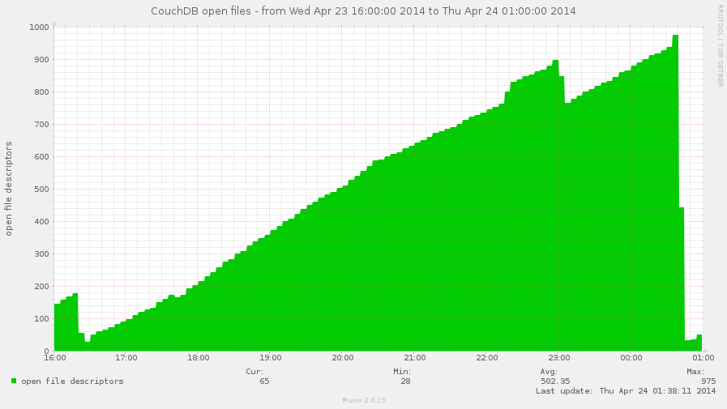
By the way, on this graph you may see the face of the real issue: file descriptors leak.
Suddenly, this metric doesn't shows real file descriptor usage, so these values
isn't accurate for emfile error prediction (but for approximately it's ok).
See below for the fix.
Yes! But since this moment we need to elevate our privileged up to CouchDB server administrator. This opens us more doors and stats sources.
One day you're looking though graphics of your monitoring system
and see that your CouchDB server suffers from heavy disk I/O.
Really heavy disk I/O. What could cause that? You take a look on
Databases I/O graph, but nothing seems wrong there. Another look
on the requests graphs - again, there are not much as usual write
requests made, bulk updates are also on the normal level.
But diskstats is full of not peaks, but really high "mountains".
So what's going wrong there?
Before completely exclude CouchDB from list of causers, we need to
check the /_active_tasks resource. The database compaction is
an operation with heavy I/O (since it's about copying a lot of data
from database A to database B) and if there runs multiple of them
for the large databases this could explain the situation.
Views indexing also matters, but not so much as compactions are.
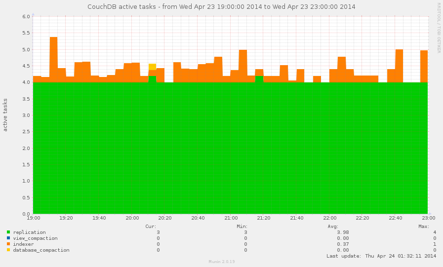
Allowing your monitoring tools to track active tasks on your CouchDB instance helps to detect these operations: when they starts and when they ends and with help of others metrics make a diagnostic of current disk I/O issues.
As bonus, active tasks also shows amount of active replication served by this instance. This could be useful for you.
CouchDB server administrators are the gods and can do a lot of things, especially dangerous and which requires care and attention. Normally, you have set up some certain amount of server admins users: for yourself and for people you trusted to administrate your instance, but are you sure that their amount wouldn't be changed in time?
With simple monitoring of server admins amount (keys length of object from /_config/admins response) you'll be notified in case when new server administrators were added and if you still don't know "who? and why?" it's good time to find the answers on these questions. For the security reasons.
Ok, you provides some public service based on CouchDB, let's say it's blogging platform. Users comes, registers, generates content, service lives active life. But how many users you have? How faster your user database grows? Or may be it's stalled? These questions are also important. Bigger users database requires to have bigger resources to provide for your service and reserve for future.
The answer on these questions is pretty simple: you need to monitor authentication database documents count. By requesting database information you'll know two things about your users: how much registered you have and how many of them were deleted.
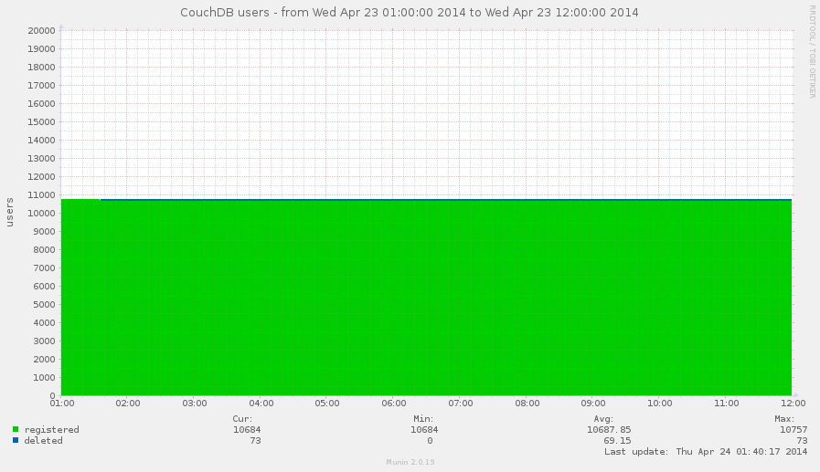
This graph shows us that nothing had changed in observed time frame, it's a pity.
This would say nothing about how many users are really active, nothing about how much of them working with your service in the same time - CouchDB doesn't knows that, but tracing the change of documents count answers helps to understand growing potential of your users database. That's really important for planning and marketing things.
As about users activity, just place near graphic with request methods and apply some base mathematics magic to estimate average activity.
Not yet. On monitoring the authentication database we used information about documents count and how faster their number grows. Why not to apply same questions for others databases?
You should know, that when you deletes a document from database it's
actually doesn't physically removed from database. If you'd used
DELETE method, then CouchDB removes all document fields (except
system _id and _rev) and adds another new special one:
_deleted: true. You can also mark document as deleted by just simple
update via PUT request by adding same _deleted: true field to it
without removing any others fields - document will be "deleted", but
all his content remains preserved.
This behavior leads to the situations when long lived databases contains a lot of deleted documents which are consumes significant amount of disk space. The Graveyard Database is the database which have deleted documents more than existed ("alive") ones.
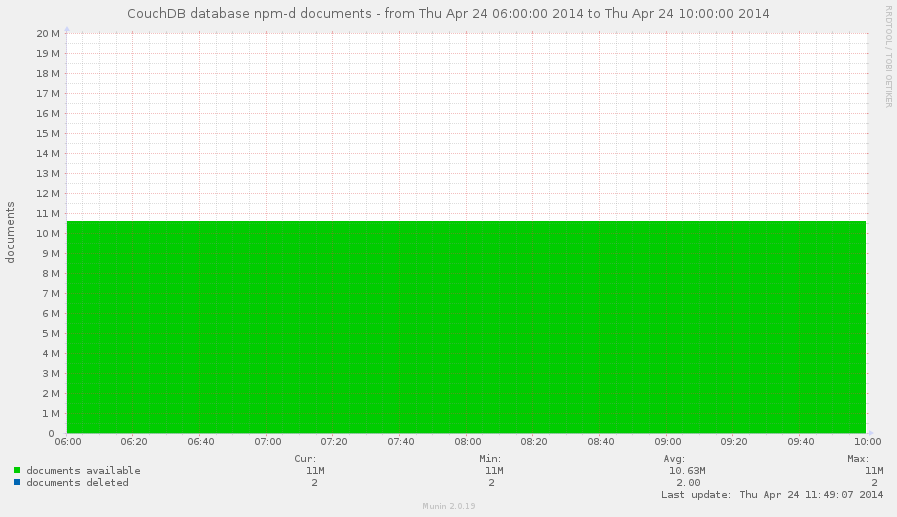
The reason to track such databases is the disk space. At some moment you'll want to completely remove deleted documents from these databases. That's easily to do via filtered replication. However, make sure that there is no any active replication that uses these databases as target otherwise all deleted documents would be replicated back again.
Another bit of your knowledge about CouchDB reminds you that databases have to be compacted from time to time to free disk space which is consumed by old documents revisions.
But when to run database compaction? And, since this is heavy disk I/O operation, when it's reasonable to compact database?
Great questions. And again monitoring of database size helps to answer on them.
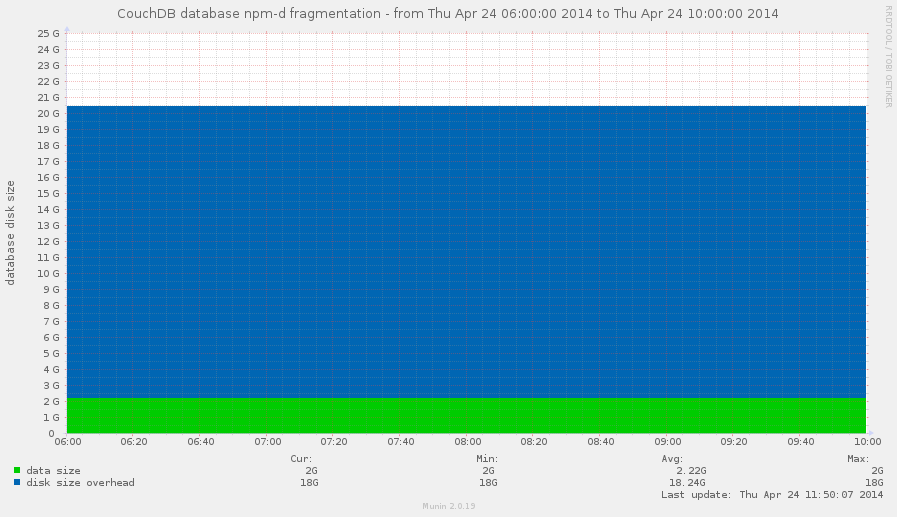
This database looks as a good candidate to be compacted RIGHT NOW!
The database information object contains two fields that are
relevant to this problem: disk_size and data_size. data_size
is the actual size of stored data, disk_size is the actual on disk
size of database. Difference between these values shows the stored
overhead which could be eliminated via database compaction.
At what point it's reasonable to start a database compaction? Well,
the answer on that question depends on total amount of available disk
space on partition where databases are stored. Personally, I prefer
mark 50% for overhead of disk_size over data_size, but it's all
depends from your environment and resources that you have.
As well as databases, view indexes are also needs to be compacted. The strategy for them is the same, except that single database can contains dozens design documents.
Our monitoring powers could be extended if we have access to environment of the host which serves CouchDB instance. This gives us more important information about CouchDB.
Note, I wouldn't tell there about disk space issues: that's quite trivial case and it handles by every monitoring tools by default.
Does the error: {error, emfile} looks familiar for you? Right, it's
about exhausting of available file descriptors for CouchDB user.
This error always happens SUDDENLY and leads to deny of service.
That's completely bad, but this situation you can predict and fix long
before it'll happens by using monitoring tools.
CouchDB has awesome feature called os_daemons - it turns CouchDB into supervisor for thirdparty scripts or applications which are served by CouchDB, respawned on failure and able to communicate with CouchDB thought simple JSON-over-stdio protocol.
While that's feature is awesome, CouchDB doesn't shows os_daemons
status in the list of active tasks, so you don't know are they alive
or actually dead (CouchDB stops his attempts to respawn process after
5 continuous failures). But we can fix that with monitoring tools.
The strategy is quite trivial: get the list of os_daemons from
configuration and iterate over CouchDB child processes. If process
exists - it's alive. Those who wasn't found marks as dead.
Metrics are import part of any system since they can tell you what's going on, what's going wrong and even what's will be wrong in nearest future.
Please note, that all these graphs are good to visualise processes that goes on server, they are miss concrete details about situation. If you have powerful system to manage application logs with flexible searching both solutions might be awesome additional to each over.
The most of monitoring systems plugins for CouchDB are unable
to handle all the described cases since they are trying to work with
just /_stats resource - it's good, but, as you may noted,
not enough to see full picture of your CouchDB.
However, at least for Munin there is one that's going to handle all this post recommendations. This plugin had been initially written by Gordon Stratton 5 years ago, but the time has only made it better:
https://github.com/gws/munin-plugin-couchdb
Today as for 0.6 release it's able to handle all the described cases with few exceptions, but work isn't done yet.